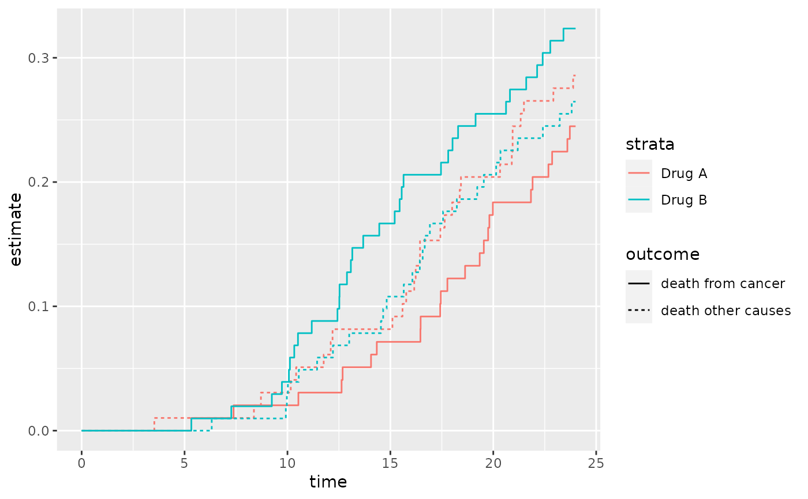
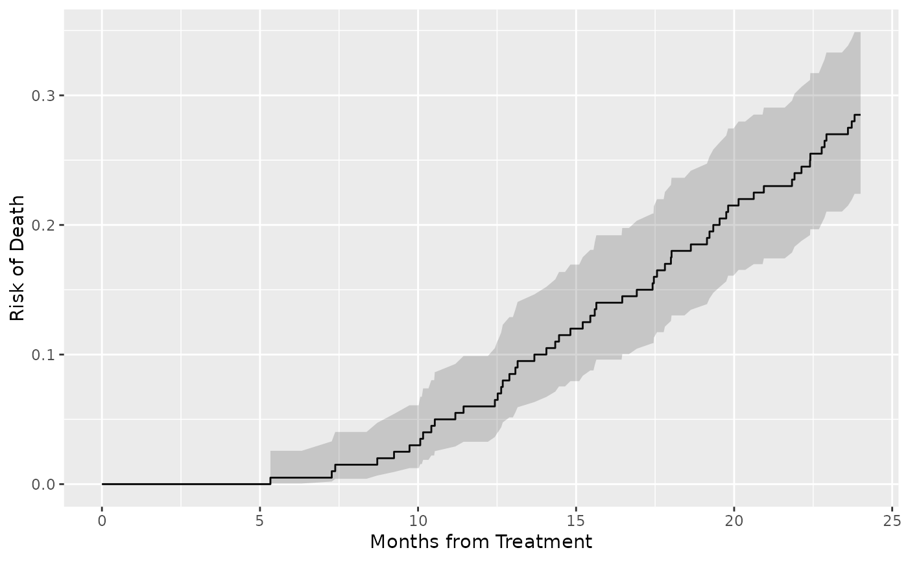

Function uses the result from tidy(object) to create figure.
# S3 method for tidycuminc
autoplot(
object,
outcomes = NULL,
conf.int = FALSE,
conf.level = 0.95,
aes = NULL,
...
)object of class 'cuminc'
character vector of outcomes to include in plot. Default is to include the first competing events.
Logical indicating whether or not to include a confidence
interval in the tidied output. Defaults to FALSE.
Level of the confidence interval. Default matches that in
cuminc(conf.level=) (typically, 0.95)
List of arguments that will be added or replace the existing
arguments in ggplot2::aes(). Details below.
not used
a ggplot object
The aes= argument accepts a named list of arguments that will be added to
or replace existing arguments in the ggplot2::aes() call.
The tibble used to create the figure is the output from tidy().
The default call to ggplot2::aes() includes, at most, the following:
ggplot2::aes(x = time, y = estimate, colour = strata, fill = strata, linetype = outcome, ymin = conf.low, ymax = conf.high
Not all arguments appear in every plot, however.
Other cuminc() functions:
broom_methods_cuminc,
cuminc()
# Example 1 ----------------------------------
cuminc(Surv(ttdeath, death_cr) ~ trt, trial) %>%
autoplot()

# Example 2 ----------------------------------
cuminc(Surv(ttdeath, death_cr) ~ 1, trial) %>%
autoplot(outcomes = "death from cancer", conf.int = TRUE) +
ggplot2::labs(
x = "Months from Treatment",
y = "Risk of Death"
)
